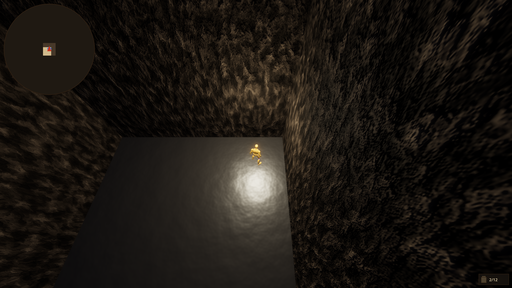
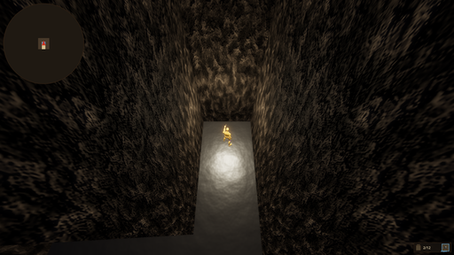
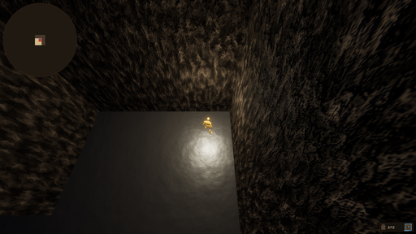
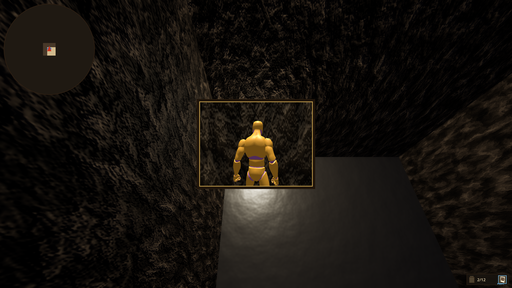
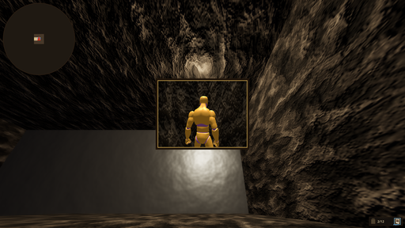
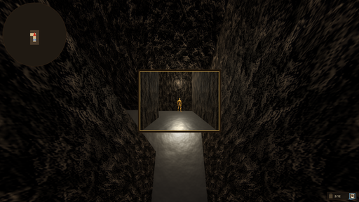
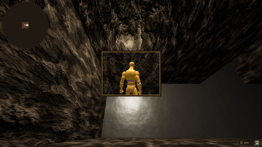

REQ-0021-tennis-ball — QA Report
PASS 3FAIL 7SKIP 010 сценариев
TC-F31-02 FAIL
Активация фотографии в руку (InInventory → Activated, паттерн B)
[log_contains] не найдено: \[Camera\] Shutter — photo created
[log_contains] не найдено: \[Camera\] Photo created at \(.+\, .+\) yaw=\d+ → slot 0
[log_contains] не найдено: \[Inventory\] Activate 'photo' → hand \(slot 0 reserved\)
Визуальные проверки:
- По центру экрана — живое окно вида запечатлённой точки с рамкой (дерево+латунь).
tc-f31-02-photo-hand.png

TC-F31-02-FAIL.png

TC-F31-03 FAIL
Деактивация возвращает фотографию в слот (Activated → InInventory)
[log_contains] не найдено: \[Inventory\] Activate 'photo' → hand \(slot 0 reserved\)
[log_contains] не найдено: \[Inventory\] Deactivate 'photo' → slot 0
TC-F31-03-FAIL.png

TC-F31-04 FAIL
Фотография не уничтожается при деактивации — повторная активация работает
[log_order] нарушена последовательность, не найдено после позиции 0: \[Inventory\] Activate 'photo' → hand \(slot 0 reserved\)
TC-F31-04-FAIL.png

TC-F33-01 FAIL
Вход движением вперёд — телепорт после EnterDuration
[log_contains] не найдено: \[Photo\] Entered → teleported
[log_contains] не найдено: \[Player\] Teleport → world=\(.+\, .+\) yaw=\d+ pitch=-?\d+
TC-F33-01-FAIL.png

TC-F33-02 PASS
Прогресс входа не растёт у стены (заблокирован вход)
TC-F33-03 FAIL
Прогресс сбрасывается при отпускании «вперёд»
[log_contains] не найдено: \[Photo\] Entered → teleported
[log_contains] не найдено: \[Player\] Teleport → world=
TC-F33-03-FAIL.png

TC-F33-04 FAIL
Прогресс сбрасывается при деактивации фотографии
[log_contains] не найдено: \[Photo\] Entered → teleported
[log_contains] не найдено: \[Player\] Teleport → world=
TC-F33-04-FAIL.png

TC-F33-06 PASS
Прогресс не растёт при движении назад или стрейфе
TC-REG-01 PASS
Прогресс входа не растёт без активированной фотографии (мяч в руке)
TC-REG-05 FAIL
Серия активаций/деактиваций не ломает фотографию — вход работает
[log_contains] не найдено: \[Photo\] Entered → teleported
[log_contains] не найдено: \[Player\] Teleport → world=
TC-REG-05-FAIL.png
